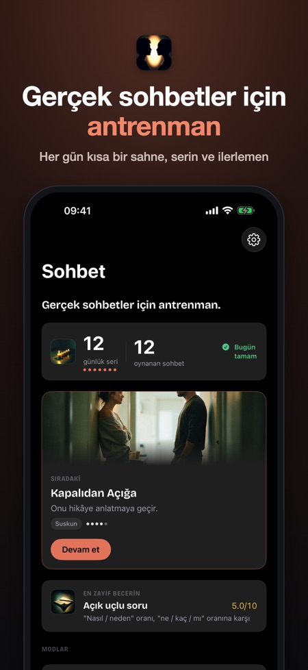
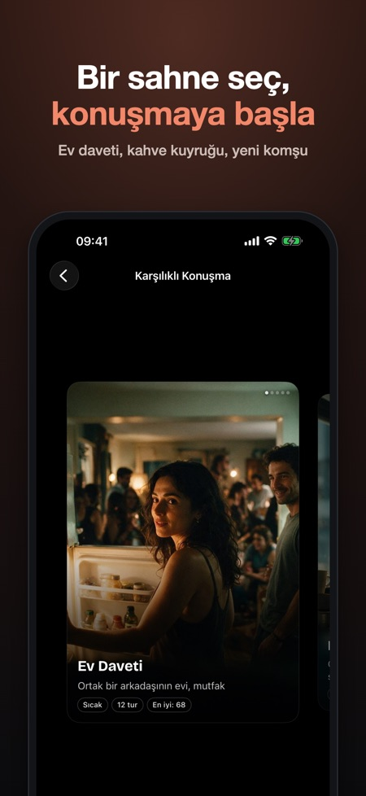
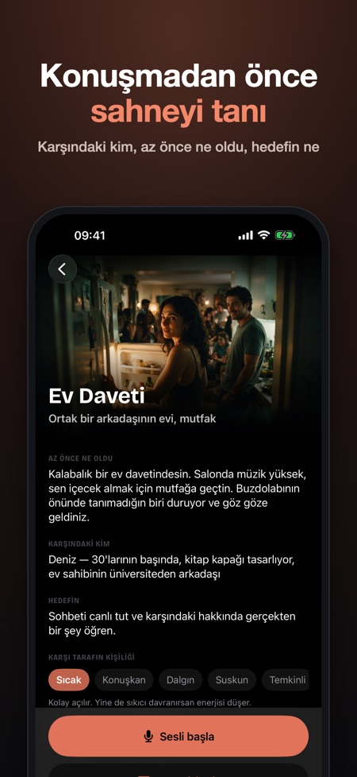

Sohbet, sosyal kaygısı olanların gerçek konuşmaları yapay zekâyla prova ettiği bir uygulama. Partide tanımadığınız biriyle konuşmayı ya da bir teklifi geri çevirmeyi önce burada deneyin.



Sosyal kaygısı olan ve zor konuşmaları gerçek hayattan önce prova etmek isteyenler için.
16 senaryo var: kafede yan masa, ev daveti, iş yemeği, tanımadığınız birinin yanına oturmak, birinin sözünü kibarca kesmek, bir teklifi geri çevirmek. Kolaydan zora açılıyorlar.
Puanlama sert: ortalama bir sohbet 50-60 alır, 80 üstü gerçekten iyi demektir. Değerlendirme hangi turda ne yaptığınızı ve yerine ne diyebileceğinizi gösterir.
Evet. Sesli konuşmada karakterin sesi senaryoya göre kadın ya da erkek olur.
Hayır, hesap ve e-posta yok. Transkriptler ve değerlendirmeler telefonunuzda saklanıyor.
Sohbet sırasında metin, yapay zekâ modeline sunucumuz üzerinden gidiyor ve sunucu metni saklamıyor; hata veren istekler 7 gün tutuluyor. Ses hiçbir zaman dosya olarak kaydedilmiyor.
Abonelik olmadan iki sohbet yapabilirsiniz. Sohbet Pro aylık ya da yıllık abonelik olarak sunuluyor.
Sohbet, sosyal kaygısı olanların gerçek konuşmaları yapay zekâyla prova ettiği bir uygulama. Partide tanımadığınız biriyle konuşmak, bir teklifi geri çevirmek, kalabalıkta söze girmek: gerçeği karşınıza çıkmadan önce burada, gerçekten tepki veren bir karakterle deneyin.
Karşınızdaki kişiyi bir yapay zekâ canlandırıyor ve yardımsever olmaya çalışmıyor. Kapalı uçlu sorular sorarsanız sıkılıyor. Kendinizden fazla bahsederseniz ilgisini kaybediyor. Doğru anda doğru soruyu sorarsanız açılıyor. Ekranın üstündeki ilgi çubuğu bunu anlık gösteriyor — sıfıra inerse sohbet biter.
SOHBET BİTİNCE
Değerlendirme övgüyle başlamıyor. Hangi turda ne yaptığınız, o hamlenin neden işe yaradığı ya da yaramadığı, ve yerine ne diyebileceğiniz tek tek yazılıyor. "Daha açık ol" gibi genel öğüt yok; her yorum bir tur numarasına ve bir cümlenize bağlı. Önerilen cümleler gerçekten kullanabileceğiniz cümleler.
Puanlama sert. Ortalama bir sohbet 50-60 alır; 80 üstü gerçekten iyi olduğu anlamına gelir. Her şeyi öven bir değerlendirici hiçbir şey öğretmez.
SESLİ KONUŞMA
Yazmak yerine konuşabilirsiniz. Karakterin sesi senaryoya göre kadın ya da erkek. Konuşma hızınız ve duraklamalarınız da değerlendirmeye giriyor — gerçek bir sohbette olduğu gibi.
16 SENARYO
Kafede yan masa, ev daveti, iş yemeği, tanımadığınız birinin yanına oturmak, birinin sözünü kibarca kesmek, bir teklifi geri çevirmek. Kolaydan zora açılıyorlar. Bir senaryoyu farklı bir kişilikle tekrar oynayabilirsiniz — aynı sahne, çok daha zor bir karşı taraf.
EKSİĞİNİZE GÖRE SENARYO
Birkaç sohbetten sonra hangi becerinin geride kaldığı ortaya çıkıyor. Tek tuşla, tam o beceriyi hedefleyen yeni bir senaryo üretiliyor.
GEÇMİŞ
Her sohbet transkriptiyle ve değerlendirmesiyle saklanıyor. Tekrar eden alışkanlıklarınızı görebilirsiniz — hep aynı yerde mi tıkanıyorsunuz, yoksa gelişiyor musunuz.
GİZLİLİK
Hesap yok, e-posta yok. Transkriptleriniz ve değerlendirmeleriniz telefonunuzda saklanıyor. Sohbet sırasında metin, karakterin cevaplarını ve değerlendirmenizi yazan yapay zekâ modeline sunucumuz üzerinden gidiyor; sesiniz de metne çevrilmek için bir konuşma tanıma servisine gönderiliyor. Sunucumuz metni saklamıyor, iki istisnayla: hata veren bir istek, hatayı düzeltebilmemiz için 7 gün tutuluyor; yalnızca siz Ayarlar'dan açarsanız sohbetlerin küçük bir örneği uygulamayı geliştirmek için 90 gün tutuluyor. İkisi de kimliğinize bağlı değil. Ses hiçbir zaman dosya olarak kaydedilmiyor.
ABONELİK
Abonelik olmadan iki sohbet yapabilirsiniz — canlı karakter, sesli konuşma ve tam değerlendirmeyle. Sohbet Pro aylık ya da yıllık, bir haftalık deneme süresiyle başlıyor: bu sınırı kaldırıyor, ayrıca bütün sohbetlerinizi birlikte okuyan koç raporunu ve eksiğinize göre senaryo üretimini açıyor.
Abonelik dönem sonunda kendiliğinden yenilenir. Ayarlar > Apple Kimliği > Abonelikler yolundan istediğiniz zaman iptal edebilirsiniz.